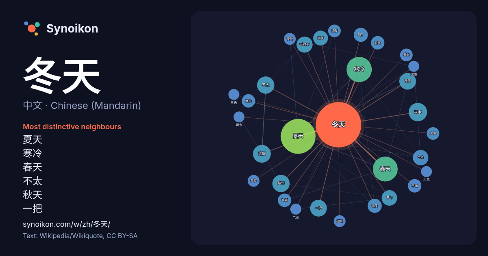

中文 · Chinese (Mandarin) · word of the day list
冬天
“winter” · The words found around it in 711 instances from Chinese (Mandarin) Wikipedia, Wikiquote.

Most distinctive neighbours
- 夏天 56×
- 寒冷 31×
- 春天 30×
- 不太 15×
- 秋天 15×
- 一把 14×
- winter 14×
- 气候 12×
- 每年 10×
- 嚴寒 9.9×
- 温度 9.9×
- 骨头 9.8×
- 故事 9.5×
- 季節 9.4×
- 溫暖 8.6×
- 不滿 8.5×
- 這個 8.4×
- 醫生 8.0×
- 溫和 7.7×
- 夜晚 7.6×
× = how many times more often than in general Chinese (Mandarin) Wikipedia text.
Most frequent neighbours
- 夏天 61
- 寒冷 32
- 春天 31
- 故事 17
- 這個 16
- 不太 15
- 每年 15
- 一把 14
- 秋天 14
- winter 13
- 一個 12
- 平均 12
- 气候 12
- 同年 11
- 因為 11
- 到了 10
- 温度 10
- 不滿 9
- 嚴寒 9
- 地区 9
In context
- 冬季（英語：Winter），也稱為冬天。是部分地区一年四季中的第四季，由于天气转冷（赤道地區除外），在很多地區都意味着沉寂和冷清。生物在寒冷來襲的時候會減少生命活動，很多植物會落葉，動物會休眠，有的稱作冬眠。候鳥會飛到較為溫暖的地方過冬。以北半球為例，除了赤道一帶其他地方都有冬季：曼谷冬季約兩個月、 Wikipedia snippets · 冬季
- 《冬天的故事》（英語：The Winter's Tale）是英国剧作家威廉·莎士比亚的作品，1623年首次发行于《第一对开本》。尽管它首次发行时被列为喜剧类型，一些现代的编辑则将其列入“传奇剧” 。因为其前三幕充满了紧张的心理描写，而后两幕为喜剧并且有一个欢喜的结局，因此一些评论家，其中包括W·W·劳伦斯，认为 … Wikipedia snippets · 冬天的故事
- 核冬天假说（Nuclear winter）是一個關於全球氣候變化的理論，它預測了大規模核子戰爭可能產生的氣候災難。核冬天理論認為使用大量的核武器，特別是對像城市這樣的易燃目標使用核武器，會讓大量的煙和煤煙進入地球的大氣層，這將可能導致非常寒冷的天氣。必须指出的是，核冬天 Wikipedia snippets · 核冬天
- 火山冬天是一個關於全球氣候變化的理論，該理論認為火山爆發後產生大量的火山灰、硫酸、水等物質到大氣層中，提升地球對太陽的反照率，將太陽輻射大幅反照回地球外，導致全球氣溫下降。若要引起長期冷卻效應，主要取決於大量的硫化合物注入平流層，這些化合物經歷一系列反應後會產生硫酸，經過成核作用後形成氣溶膠。這些氣 Wikipedia snippets · 火山冬天
- 《冬天的骨头》（英語：Winter's Bone，香港、新加坡译《冻死骨》，台湾译《冰封之心》）是一部2010年的美国独立制片电影，根据2006年丹尼尔·伍德里尔（英语：Daniel Woodrell）的同名小说改编，黛布拉·格兰尼克（英语：Debra Granik）编剧并执导。影片由著名新生代女演 Wikipedia snippets · 冬天的骨头
- 撞击冬天是由于大型小行星或彗星撞击地球表面而造成长时间气候寒冷时期的一种假说理论。如果此类地外天体在进入地球大气层后保持完整并成功撞击到陆地或较浅水体，其产生的冲击力就可以掀起大量烟尘、碎屑以及其它悬浮粒子进入大气；如果小行星或彗星直径超过5公里（3.1英里），那么即使其发生空爆（英语：meteor Wikipedia snippets · 撞击冬天
- 冬天的故事》之前。它在莎士比亚逝世后首次刊于其同事海明与康德合编的1623年对开本戏剧全集中。《辛白林》的故事主要基于古代凯尔特族不列颠国王Cunobeline（英语：Cunobeline）的传说，虽然在最初刊行时该剧被归为悲剧，现代批评家倾向于归其于传奇剧乃至于喜剧之列。和《奥赛罗》、《冬天 Wikipedia snippets · 辛白林
- 郭德纲（1973年1月18日—），生于天津，祖籍山西汾阳，中國相声演员、影视演员、电视节目主持人，德云社创始人之一。2004年冬天起受到媒体关注。 1973年出生于中华人民共和国天津市。 1981年，8岁开始拜高庆海学习评书，曾演说《杨家将》、《张广泰》、《隋唐》。 Wikipedia snippets · 郭德纲
More Chinese (Mandarin) words
Precomputed on 2026-10-09 with default settings (±5 words, medium corpus). The interactive map can refresh it with live data.